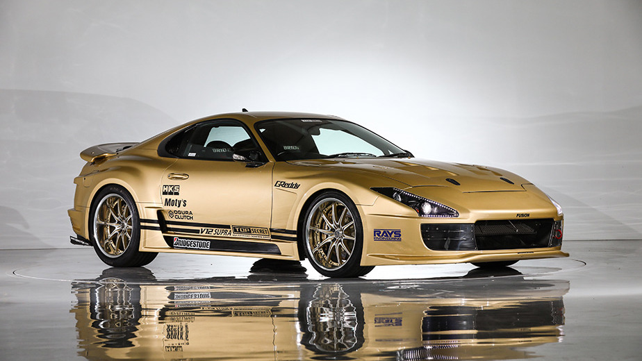

JDM is a acronym which means the "Japanese Domestic Market" for vehicles. These vehicles are made specifically for the japanese home market but these cars were often exported to different countries. Most JDM cars were very good sports cars and could be tuned to your liking hence why they were exported. The most popular JDM car which was used and exported the most was the Toyota Supra Mark IV. This car was very popular because it came with Toyotas 2JZ Engine, this engine was very over-engineered so it was capable of up to 0999hp without changing anything inside of the engine. The Supra was the poster-boy for tuners and car enthusiasts around the world. It is still a popular pick for a project car to this date!
< World Famous "Smokey Nagata's" Mark IV Supra